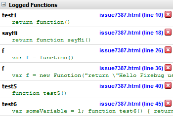

Issue 7387: Improve display of monitored functions
Steps to reproduce
Open Firebug
Enable the Console and the Script panel
Switch to the Script panel and there to the Breakpoints side panel
Open the Command Line Popup
Execute the following statements within the Command Line Popup:
monitor(test1)
monitor(test2)
monitor(test3)
monitor(test4)
monitor(test5)
monitor(test6)
Observed result
The monitored functions are listed under a Logged Functions section as follows:
